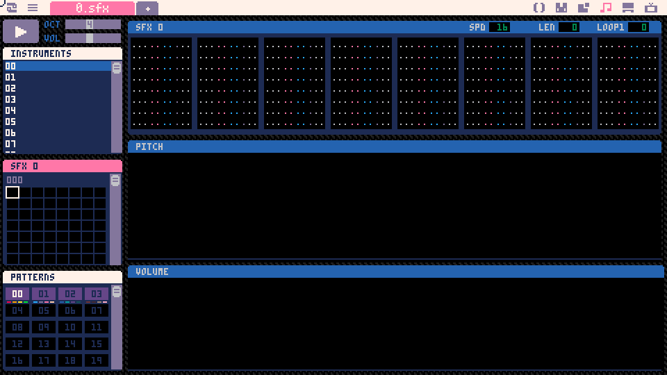
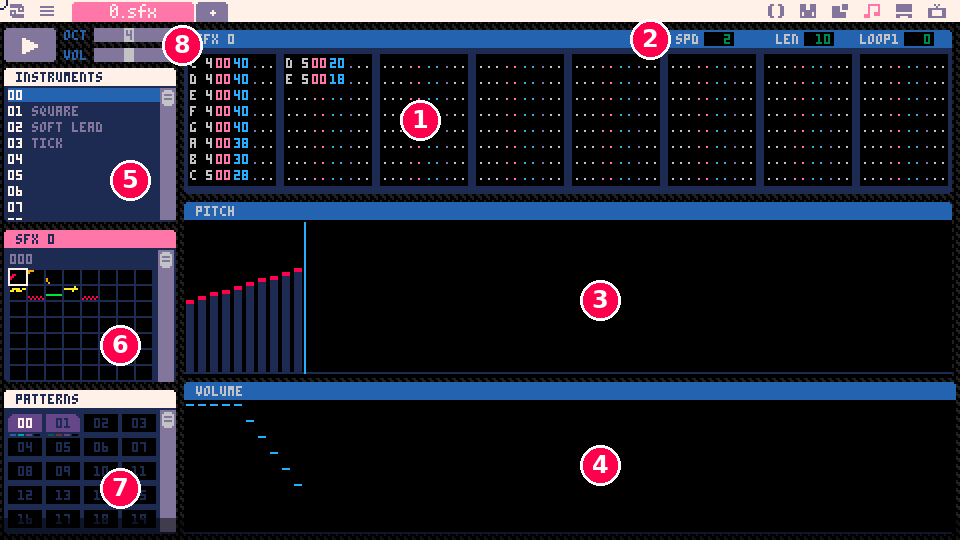
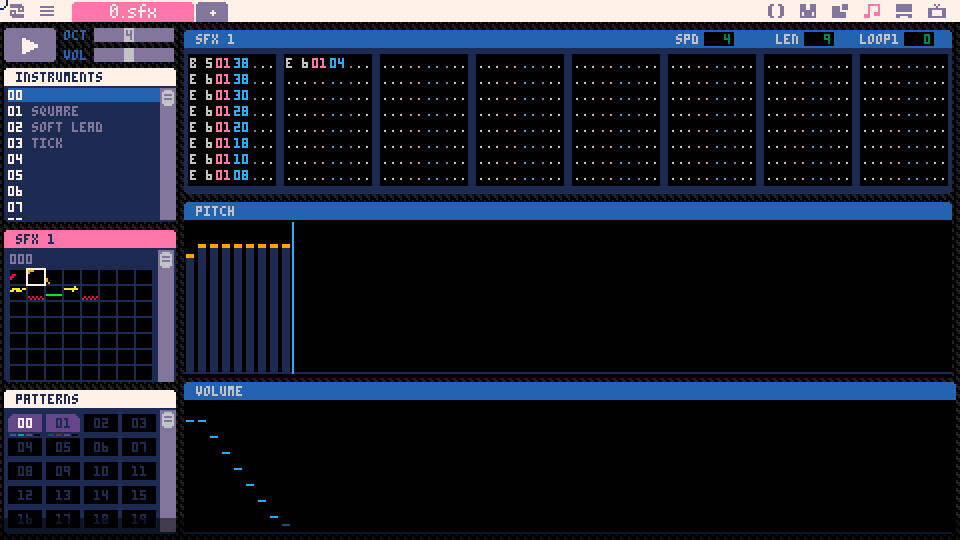
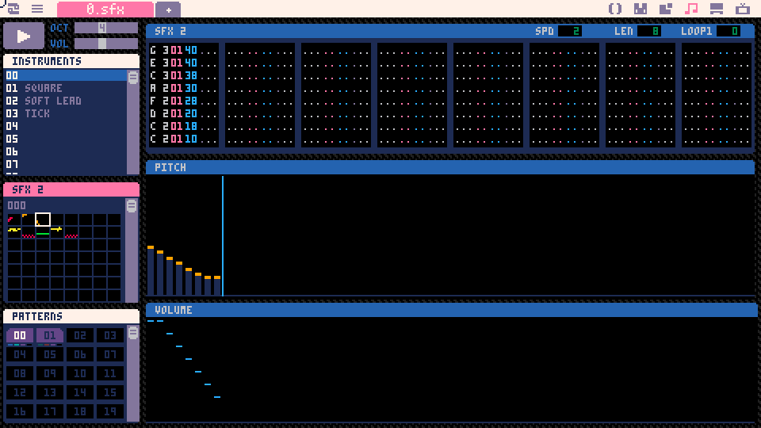
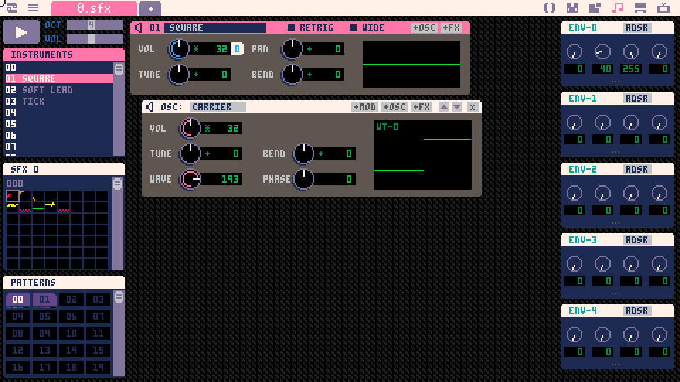
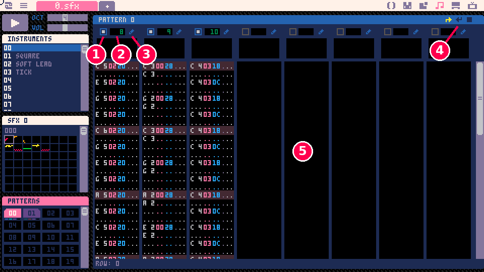

demotron / beginner basics / 11
Sound
The sfx editor, making sound effects, playing them with sfx, channels, and a first look at music.
Sound effects
A game with no sound feels broken, even when everything works. A short noise when the player jumps, picks something up or walks into a wall tells them the game noticed, and a tune underneath holds it all together.
In this lesson we make three sound effects in Picotron's sfx editor (a jump, a coin and a bump), play them from code with sfx, find out what channels are and why they matter, and finish with a short music loop started by music. Basics 12 uses all of them in a finished game.
We keep to what's needed to make and play sounds. Designing instruments (Picotron has a whole synthesizer for that) gets its own lessons in the "Picotron in depth" track, still being written; the notes marked Advanced below say what's there in the meantime.
The sfx editor
Click the musical notes icon at the top right of the screen, the fourth one along, after the code, sprite and map icons. In a new cartridge the sfx editor looks like this:

It opens on sound effect 0, with nothing in it yet. Here's the same editor with our jump sound in it, and its parts numbered:

- The rows. A sound effect is a list of up to 64 notes, played one after another, shown here in eight columns of eight. Each row is a pitch (
C 4is middle C), an instrument (00), a volume (40) and an effect (..., none). The instrument and volume are written in hexadecimal, like the tile numbers in Basics 10: volume40is 64, full volume, and20is half. Dots mean "nothing set". - SPD, LEN and LOOP1: how fast the rows play, how many of them play, and whether the sound loops. More on these below.
- The pitch area. One bar for each row: the taller the bar, the higher the note. The colour on top of a bar shows which instrument plays it.
- The volume area: one mark for each row, higher for louder.
- The instruments. A cartridge has 64 of them, numbered 00 to 3f. Click one to choose it for the notes you draw next.
- The sound effects, each one a tiny picture of its pitches. Click one to edit it. The label
000means this block of 64 starts at number 0; scroll down for more, up to 383. - The patterns, which turn sound effects into music. The music section comes back to them.
- Play, plus OCT and VOL, which set the octave and volume of notes typed on the keyboard (see the Advanced note below).
Space plays the sound effect, and Space again stops it. The play button does the same. Ctrl + Space plays from the row the cursor is on, and Shift + Space from the start of the cursor's group of 8 rows.
The editor has three modes: one for instruments, one for sound effects (the one shown here; the manual calls them tracks) and one for patterns. Tab switches between them, or click the heading of the list on the left (INSTRUMENTS, SFX, PATTERNS).
Picotron calls sound effects sfx, the name of the function that plays them. Like sprites and maps, they're part of the cartridge, kept in sfx/0.sfx (the file named on the editor's tab), and saving the cartridge saves them too.
Advanced: typing notes
Drawing with the mouse (next section) is quickest for sound effects, but notes can also be typed. Click a row in the rows area, then play the keyboard like a piano: Q 2 W 3 E R 5 T 6 Y 7 U are the twelve notes from C to B (the number keys are the black notes), and Z S X D C V G B H N J M the octave below. The notes go in at the octave and volume set by OCT and VOL, with the instrument you've chosen. Typing . sets a pitch, instrument or volume back to "nothing set".
The effect column takes one letter and a parameter: s slide, v vibrato, - and + slide down or up, > fade out, a b n arpeggios, t tremolo, r retrigger, d delay, c cut, p pan, f fade to a volume, and more. Shift with a note key moves the selected notes up by that many semitones from C. Ctrl + Z and Ctrl + Y undo and redo, and Ctrl + C and Ctrl + V copy and paste notes. The manual's "Track Editor" section has the full list and what each effect's parameter means.
Making a sound effect
Pick an instrument (00 is fine), then click and drag across the pitch area. Every column you drag over becomes a row: its pitch is how high you drew it, the instrument is the one you picked, and the volume is 20, half volume, if the row had none. The editor's source shows a few more tricks:
- Right-click a bar to pick up its instrument.
- Shift + drag changes only the instrument of the rows you drag over, leaving their pitches alone.
- Ctrl + drag snaps the pitches to a C minor pentatonic scale, which is hard to make sound bad.
- Drag in the volume area to make rows louder or quieter. A sound that fades out at the end sounds finished rather than cut off.
Press Space to hear it. It'll probably sound slow and wobbly, like a tune played badly, and that's because of SPD. Each row plays for SPD ticks, and a tick is a 120th of a second. A new sfx starts at SPD 16, which is right for music: about seven notes a second. The manual's advice for sound effects is 1 to 4. Drag the number up or down, or point at it and turn the mouse wheel.
LEN is how many rows play. Left at 0, all 64 rows play, including any empty ones at the end, so set it to the number of rows you drew. (It counts for more than tidiness: Picotron counts the sound as playing until all its rows are done, which matters for channels, later on.) LOOP1 makes a sound repeat. Set it bigger than LEN and the LEN field's label changes to LOOP0: the rows from LOOP0 up to just before LOOP1 then play over and over, and the sound's length goes back to all 64 rows. An engine hum or an alarm might loop; our three sounds don't.
Here are our three, in sfx 0, 1 and 2, and how each was made:
- Jump (sfx 0), shown above: ten rows climbing from C 4 to E 5 on instrument 00, the default triangle wave, at SPD 2. The volume tails off over the last few rows. Ten rows at 2 ticks each is a sixth of a second.
- Coin (sfx 1): one B and then a high E, held while the volume fades, at SPD 4, on instrument 01, a square wave.

- Bump (sfx 2): eight rows falling from G 3 down to C 2 on the square wave at SPD 2: a short low bonk.

Make your own versions in the same three slots. They don't need to match ours; the code below plays whatever is in sfx 0, 1 and 2.
Advanced: instruments
Instrument 00 in a new cartridge is a plain triangle wave, and so are the other 63. Our instrument 01 is the same instrument with one knob turned: the WAVE knob, which picks the shape of the sound wave (sine, triangle, saw, square and the shapes in between). That's the manual's own suggestion for a first change, and for many sounds it's all that's needed. Ctrl-click an instrument in the list, or press Tab until the instrument editor shows:

An instrument is a small synthesizer made of up to eight nodes: oscillators (OSC) that make a sound, modulators (MOD) that bend another node's pitch or volume, and effects (FX: a filter, an echo, a shape). The envelopes on the right (ENV-0 to ENV-4 here) move a knob over time, which is how a note fades away or a sound sweeps upwards. RETRIG restarts the instrument on every row, even at the same pitch, and WIDE gives it stereo. The manual's "Instrument Editor", "Instrument Nodes" and "Envelopes" sections cover every knob, and the coming "Picotron in depth" lessons on the synth will too.
Playing a sound
sfx(n) plays sound effect n. The manual's example is a single line at the end of _update, which plays sfx 0 when X is pressed:
1if (btnp(5)) sfx(0)That's if in Picotron's one-line form: the condition in brackets, then the thing to do, with no then or end. Here it is in the mover from Basics 4, which now hops when you press X, with the jump sound, and bumps into the edges of the screen:
1x, y = 240, 135
2hop = 0 -- frames left in a hop
3
4function _update()
5 if btn(0) then x -= 2 end
6 if btn(1) then x += 2 end
7 if btn(2) then y -= 2 end
8 if btn(3) then y += 2 end
9
10 -- X: hop, with the jump sound
11 if btnp(5) and hop == 0 then
12 hop = 16
13 sfx(0)
14 end
15 if hop > 0 then hop -= 1 end
16
17 -- the edges: stay inside, and bump
18 if x < 8 or x > 472 or y < 8 or y > 262 then
19 x = mid(8, x, 472)
20 y = mid(8, y, 262)
21 sfx(2)
22 end
23end
24
25function _draw()
26 cls(1)
27 -- up 16 pixels and back down again
28 local h = hop * (16 - hop) / 4
29 ovalfill(x - 8, y + 6, x + 8, y + 10, 0)
30 circfill(x, y - h, 8, 12)
31endA hop lasts 16 frames, counted down in hop. The circle is drawn h pixels higher than y: hop * (16 - hop) / 4 is 0 when the hop starts, rises to 16 halfway through and is 0 again at the end, which looks like a jump without any physics. The dark oval stays on the ground as a shadow.
The jump uses btnp, not btn, because a sound effect should start once per press. Basics 4 showed that btn is true on every frame the button is held, so if btn(5) then sfx(0) end would start the jump again 60 times a second.
Tap X and the jump plays once per hop. Now walk into an edge and keep holding the arrow. Not good: a flat buzz instead of a bump. The if that keeps the circle inside the screen is true on every frame we push against the edge, so sfx(2) runs every frame, and starting a sound that's already playing starts it again from the top. Only the first sixtieth of a second of the bump ever plays, over and over. It's the btn mistake again, with a wall instead of a button.
Starting a sound once
What we want is the bump on the frame the circle reaches the edge, and then silence until it leaves and comes back. So the program has to remember whether it was already at the edge on the last frame:
1 -- the edges: bump only on the first frame
2 local out = x < 8 or x > 472
3 or y < 8 or y > 262
4 if out and not was_out then sfx(2) end
5 was_out = out
6 x = mid(8, x, 472)
7 y = mid(8, y, 262)This replaces the edge code at the end of _update, with was_out = false at the top of the program. out says whether the circle has gone past an edge this frame. The bump plays only when it has and it hadn't on the last frame, and then was_out remembers this frame's answer for the next one. Pushing against the edge keeps out true, so nothing more plays; step away and out turns false again, ready for the next bump. (That's the same thing btnp does for a button, written out by hand.)
Channels
Picotron can play 16 sounds at the same time, one on each of its 16 channels, numbered 0 to 15. Every sound effect plays on a channel, and a channel plays one sound at a time.
sfx(n) with no channel picks one for us. sfx(n, c) plays on channel c. This demo shows all 16 channels and which sfx each one is playing:
1function _update()
2 -- Picotron picks a free channel
3 if btnp(5) then sfx(1) end -- X: coin
4 if btnp(4) then sfx(0) end -- Z: jump
5 -- we pick channel 0 for both of these
6 if btnp(0) then sfx(1, 0) end -- left: coin
7 if btnp(1) then sfx(2, 0) end -- right: bump
8end
9
10function _draw()
11 cls(1)
12 print("x coin z jump (any channel)", 48, 50, 6)
13 print("left coin right bump (channel 0)",
14 48, 64, 6)
15 print("sfx playing on each channel", 48, 104, 13)
16 for c = 0, 15 do
17 -- which sfx channel c is playing (-1: none)
18 local n = flr(stat(400 + c, 12))
19 local bx = 48 + c * 24
20 if n >= 0 then
21 rectfill(bx, 120, bx + 19, 150, 10)
22 print(n, bx + 7, 132, 0)
23 else
24 rect(bx, 120, bx + 19, 150, 5)
25 end
26 print(c, bx + 2, 154, 6)
27 end
28endstat asks Picotron about itself, and stat(400 + c, 12) is the number of the sfx playing on channel c, or -1 if it's silent (the manual's "Querying Mixer State" lists the rest). Like most of stat's answers it's a float, so it would print as 1.0; flr makes it a whole number.
Press X and Z (Picotron's O button) together and both sounds play at once, on two channels. Press X several times quickly, though, and the coin doesn't pile up on more and more channels: playing an sfx that's already playing starts it again on the channel it's already using. For a coin that's what we want, since ten coins in a row should sound like ten coins, not one loud smear.
When we pick the channel ourselves, a channel still plays only one sound. Press left for the coin on channel 0, then right for the bump on channel 0 before the coin finishes: the bump cuts it off. That's useful when two sounds should never overlap (a character can't say two things at once), and a trap when they should.
Notice which channels Picotron picks for itself: 8 and up. It prefers channels 8 to 15 on purpose (the manual's changelog says why: so that sound effects don't get in the way when music starts), because music plays on the low channels.
Advanced: the rest of sfx()
The manual's full form is sfx(n, [channel], [offset], [length], [mix_volume]):
channel: 0 to 15.nilor -1 lets Picotron choose.offset: the row to start from, sosfx(0, nil, 4)skips the first four rows. A negative offset waits that many rows before the first note.length: how many rows to play. For a looping sfx it's the number of rows played, counting the repeats.mix_volume: how loud to mix this play,0x40(64) being normal. Handy for a quieter far-away version of the same sound.
A negative n is a command for a channel rather than a sound: sfx(-1, c) stops channel c (leaving any echo to die away), sfx(-2, c) stops it dead, sfx(-3, c) releases a looping sfx, so it stops looping and plays on through the rest of its rows, and sfx(-4, c, vol) sets the channel's mix volume. note() with no arguments silences everything. note(pitch, inst, vol, ...) plays a single note directly, mostly for tools.
The manual says n is 0 to 63, but the editor holds 384 sfx and sfx(300) plays sfx 300 in Picotron 0.3.0d. A cartridge started as a cartridge loads sfx/0.sfx by itself; a .lua file run on its own must load it with fetch("sfx/0.sfx"):poke(0x30000) (the manual's "Audio" section explains the sound bank's place in memory), and other .sfx files can be loaded at other addresses (see music below); poke(0x553c, addr >> 16) before an sfx() call plays that sfx from the bank at addr. Coming from PICO-8: there are 16 channels instead of 4, 64 rows instead of 32, and 64 instruments built from nodes instead of 8 fixed waves.
Music
Music in Picotron is sound effects played together. A slow sfx (SPD 16) holds the tune, another the bass line, another a beat, and a pattern plays them at the same time, one per channel. A song is patterns played one after another.
Our loop uses sfx 8 to 12 (leaving 0 to 7 for sound effects) and two patterns. Click pattern 00 in the list, or press Tab from the sfx editor, to see the pattern editor:

- On or off for each of the pattern's 8 channels. Ours uses three.
- Which sfx that channel plays: drag the number, or drag an sfx from the list on the left onto the channel. Here the tune is sfx 8, the bass sfx 9 and the beat sfx 10.
- Edit that sfx in the sfx editor.
- Loop start, loop end and stop, for the whole song. Pattern 0 has loop start lit; pattern 1 has loop end, so after pattern 1 the music goes back to pattern 0, for ever. Stop ends the music after a pattern.
- The rows of each channel's sfx, side by side.
The tune and bass are 32 rows at SPD 16, about 4.3 seconds a pattern. A pattern lasts as long as its left-most sfx that doesn't loop, so sfx in the same pattern can have different lengths and speeds. Space plays the pattern in this mode.
music(0) starts the music at pattern 0, and music(-1) stops it:
1playing = false
2
3function _update()
4 -- X: start or stop the music
5 if btnp(5) then
6 if playing then
7 music(-1)
8 else
9 music(0)
10 end
11 playing = not playing
12 end
13 -- Z: a coin, on top of the music
14 if btnp(4) then sfx(1) end
15endThe _draw is the channel display from before, plus stat(466), which is the pattern playing (or -1).
Start the music and channels 0, 1 and 2 light up with sfx 8, 9 and 10, then 11, 12 and 10 for pattern 1. A pattern plays each of its sfx on the channel with the same number as its slot: the first on channel 0, the second on 1, and so on. Press Z and the coin goes to a channel of its own, 8 or above, so the tune carries on.
That's why I leave Picotron to choose the channels for sound effects. If a sound effect is told to play on a music channel, sfx(1, 0) here, it takes the channel over and the tune goes silent until the next pattern starts. music can also reserve channels, so that no sound effect ever lands on them unless it asks for that channel by number:
1music(0, nil, 0x7) -- keep channels 0-2 for music0x7 is a bitfield: one bit for each channel, lowest first, and 7 is 1 + 2 + 4, channels 0, 1 and 2. Reserving the channels our music uses costs nothing, and it means a burst of sound effects can never cut into it.
Advanced: the rest of music()
The manual's full form is music(n, [fade_len], [channel_mask], [base_addr], [tick_offset]):
fade_len: fade in over that many milliseconds, somusic(0, 1000)fades in over a second.music(-1, 1000)fades out instead. (In 0.3.0d the music is silent after the fade, butstat(466)still reports the pattern as playing; a plainmusic(-1)afterwards really stops it.)channel_mask: the channels to reserve, as above.base_addr: play music from a different sound bank, so a big song can live in its own file next to the sound effects:fetch("sfx/title.sfx"):poke(0x80000)and thenmusic(0, nil, nil, 0x80000)(the manual's example).tick_offset: start part-way into the pattern, counted in ticks, somusic(0, nil, nil, nil, 2 * 16)starts at row 2 of an SPD 16 pattern.
Music is mixed at an overall music volume, poke(0x5539, v), on top of the whole program's sound volume at 0x5538 (both 0x40 normally). stat(467) is the left-most music channel that doesn't loop, and stat(400 + c, n) has the rest of a channel's state: its pitch, instrument, volume, row and more.
One more thing that surprises people: only one program at a time can play sound. When two windows both want to make noise, the one that had focus most recently wins. So if an editor or another cart is making sound, click the window you want to hear.
Putting it together
In this lesson we learned:
- the sfx editor: rows of pitch, instrument, volume and effect, the pitch and volume areas, SPD, LEN and LOOP1
- three sound effects, drawn with the mouse at a fast SPD
sfx(n), withbtnp, or a remembered "was it already true?", so a sound starts once- 16 channels, Picotron choosing 8 and up, and an sfx that's started again restarting on its own channel
- patterns, and
music(0),music(-1)and reserved music channels
Basics 12 puts the chick, the map, these sounds and the music together into a small finished game.
Try this
- Basics 10's first challenge makes coins collectable with
mset. Add the coin sound when one is picked up. Then change the coin to play on channel 0 every time, and pick up two coins close together. Before you try it, predict whether you'll hear one coin or two, and why. - Make each coin in a quick run sound higher than the last. Copy the coin into sfx 3, 4, 5 and 6 (click sfx 1 in the list, Ctrl + C, click sfx 3, Ctrl + V, and so on), and move each copy higher than the one before: Ctrl + A selects all its rows, and Shift + W moves the selected notes up 2 semitones. Then play
sfx(3 + combo), wherecombocounts the coins picked up in a row, from 0. When shouldcombogo back to 0, and what keeps it from going past 3? - Start the music on the player's first button press instead of at the start. Web browsers don't let a page make any sound until the player has clicked or pressed something on it (that's why the demos on this page wait for "Run it here"), so web games often hold their music back for the first press. Which do you need:
btnpon every button, or also a mouse click? (mouse()returns the pointer'sx,yand its buttons, which are 0 when none is held.) - A Picotron quirk to find: set the coin's LEN back to 0 and run the channels demo. Before you press X, predict how long its channel will stay lit compared with how long you can hear it. Work out the exact time from SPD (a tick is a 120th of a second), then check it.
Built with Picotron 0.3.0d.